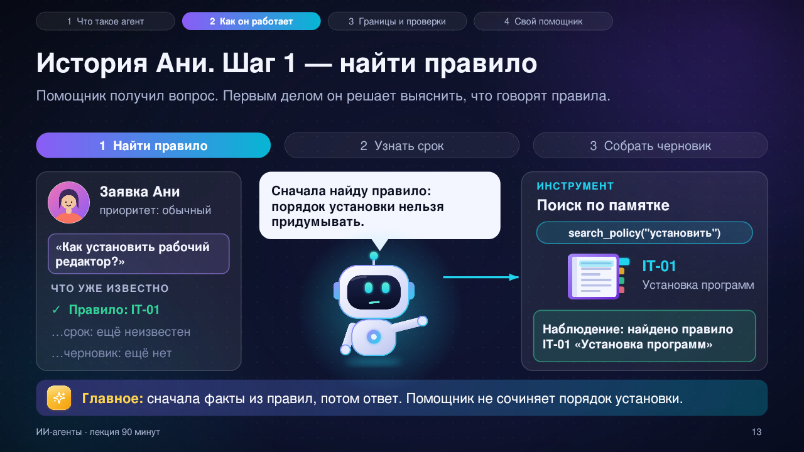

01
Сначала — найти правило
Запомните
РАЗБЕРЁМ ГОТОВЫЙ ПРИМЕР
Аня хочет установить рабочий редактор. Посмотрим, как её вопрос превращается в черновик ответа.

Дальше: узнаем срок ответа
На слайдах показаны все элементы сразу. В этом примере работает учебный симулятор.
ТЕПЕРЬ ВАША ОЧЕРЕДЬ
Сначала предположите, чем закончится работа помощника. Затем запустите его и сравните.
ВОПРОС АНИ
В учебной памятке есть правило установки программ. Помощник может найти его, узнать срок и подготовить черновик.
Помощник собрал ответ из найденного правила и срока. Сообщение Ане не отправлено: сначала текст должен проверить человек.
Первый опыт завершён. Создание своего правила добавим после проверки этого прототипа.